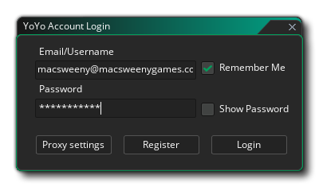
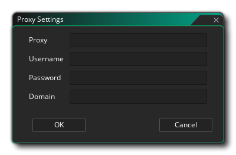

Una vez que haya descargado e instalado GameMaker Studio 2, la primera vez que lo use se le solicitará ingresar los detalles de su licencia: 
Su licencia está vinculada a una Cuenta YoYo (YYA) y se le exige que haya hecho una para poder usar GameMaker Studio 2. Esta cuenta contiene todos los detalles de la licencia de los productos de YoYo Games que posee, y también se usa para YoYo Games Marketplace. Puede encontrar más información sobre YYA en la siguiente página:
¡IMPORTANTE! Si ha estado usando una Licencia de prueba para GameMaker Studio 2 y luego compra una de las otras licencias (Escritorio, Móvil, UWP, Web o Consola), entonces podrá cerrar la sesión del IDE y luego reiniciar GameMaker Studio 2 y volver a iniciar sesión de nuevo para asegurarse de que la nueva licencia se aplique correctamente (aunque esto debería suceder automáticamente). Puede cerrar sesión en el menú Archivo.
Si necesita soporte Proxy para su instalación de GameMaker Studio 2, puede agregarlo simplemente haciendo clic en Proxy. Esto abrirá la siguiente ventana: 
Ahora puede agregar los detalles de su proxy. Algunos de los campos mostrados arriba son opcionales y si hay uno que no necesita, simplemente deje el campo en blanco. Sin embargo, antes de continuar, vale la pena señalar que si ha establecido un proxy en las Opciones de Internet de Windows y no requiere un nombre de usuario / contraseña, entonces debería simplemente "tal cual" y probablemente no se le pedirá que configure el proxy en GameMaker Studio 2.
Si su proxy requiere un nombre de usuario y / o contraseña, deberá agregarlos a los campos que se muestran en la ventana de arriba. Tenga en cuenta que en estos casos los datos de usuario / contraseña / proxy siempre serán necesarios, y que la IP del proxy también debe tener el puerto agregado, es decir: xx.xx.xx.xx:port.
Una vez que haya añadido la información relevante, haga clic en Ok y acceder a GameMaker Studio 2 de forma normal.